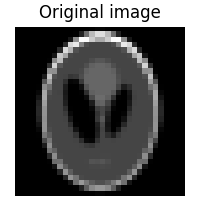

Note
New to DeepInverse? Get started with the basics with the 5 minute quickstart tutorial..
Random phase retrieval and reconstruction methods.#
This example shows how to create a random phase retrieval operator and generate phaseless measurements from a given image. The example showcases 4 different reconstruction methods to recover the image from the phaseless measurements:
Gradient descent with random initialization;
Spectral methods;
Gradient descent with spectral methods initialization;
Gradient descent with PnP denoisers.
General setup#
import deepinv as dinv
from pathlib import Path
import torch
import matplotlib.pyplot as plt
from deepinv.models import DRUNet
from deepinv.optim.data_fidelity import L2
from deepinv.optim.prior import PnP, ZeroPrior
from deepinv.optim import PGD
from deepinv.utils import load_example
from deepinv.utils.plotting import plot
from deepinv.optim.phase_retrieval import (
correct_global_phase,
)
from deepinv.models.complex import to_complex_denoiser
BASE_DIR = Path(".")
RESULTS_DIR = BASE_DIR / "results"
# Set global random seed to ensure reproducibility.
torch.manual_seed(0)
device = dinv.utils.get_device()
Selected GPU 0 with 6717.25 MiB free memory
Load image from the internet#
We use the standard test image “Shepp–Logan phantom”.
tensor(0., device='cuda:0') tensor(0.7412, device='cuda:0')
Visualization#
We use the customized plot() function in deepinv to visualize the original image.
Signal construction#
We use the original image as the phase information for the complex signal. The original value range is [0, 1], and we map it to the phase range [-pi/2, pi/2].
x_phase = torch.exp(1j * x * torch.pi - 0.5j * torch.pi)
# Every element of the signal should have unit norm.
assert torch.allclose(x_phase.real**2 + x_phase.imag**2, torch.tensor(1.0))
Measurements generation#
Create a random phase retrieval operator with an oversampling ratio (measurements/pixels) of 5.0, and generate measurements from the signal with additive Gaussian noise.
# Define physics information
oversampling_ratio = 5.0
img_size = x.shape[1:]
m = int(oversampling_ratio * torch.prod(torch.tensor(img_size)))
n_channels = 1 # 3 for color images, 1 for gray-scale images
# Create the physics
physics = dinv.physics.RandomPhaseRetrieval(
m=m,
img_size=img_size,
device=device,
)
# Generate measurements
y = physics(x_phase)
Reconstruction with gradient descent and random initialization#
First, we use the function deepinv.optim.L2 as the data fidelity function, and the class deepinv.optim.optim_iterators.GDIteration as the optimizer to run a gradient descent algorithm. The initial guess is a random complex signal.
data_fidelity = L2()
prior = ZeroPrior()
iterator = dinv.optim.optim_iterators.GDIteration()
# Parameters for the optimizer, including stepsize and regularization coefficient.
optim_params = {"stepsize": 0.06, "lambda": 1.0, "g_param": None}
num_iter = 1000
# Initial guess
x_phase_gd_rand = torch.randn_like(x_phase)
loss_hist = []
for _ in range(num_iter):
res = iterator(
{"est": (x_phase_gd_rand,), "cost": 0},
cur_data_fidelity=data_fidelity,
cur_prior=prior,
cur_params=optim_params,
y=y,
physics=physics,
)
x_phase_gd_rand = res["est"][0]
loss_hist.append(data_fidelity(x_phase_gd_rand, y, physics).cpu())
print("initial loss:", loss_hist[0])
print("final loss:", loss_hist[-1])
# Plot the loss curve
plt.plot(loss_hist)
plt.yscale("log")
plt.title("loss curve (gradient descent with random initialization)")
plt.show()
initial loss: tensor([177.3943])
final loss: tensor([26.3593])
Phase correction and signal reconstruction#
The solution of the optimization algorithm x_est may be any phase-shifted version of the original complex signal x_phase, i.e., x_est = a * x_phase where a is an arbitrary unit norm complex number.
Therefore, we use the function deepinv.optim.phase_retrieval.correct_global_phase to correct the global phase shift of the estimated signal x_est to make it closer to the original signal x_phase.
We then use torch.angle to extract the phase information. With the range of the returned value being [-pi/2, pi/2], we further normalize it to be [0, 1].
This operation will later be done for all the reconstruction methods.
# correct possible global phase shifts
x_gd_rand = correct_global_phase(x_phase_gd_rand, x_phase)
# extract phase information and normalize to the range [0, 1]
x_gd_rand = torch.angle(x_gd_rand) / torch.pi + 0.5
plot([x, x_gd_rand], titles=["Signal", "Reconstruction"], rescale_mode="clip")
Reconstruction with spectral methods#
Spectral methods deepinv.optim.phase_retrieval.spectral_methods offers a good initial guess on the original signal. Moreover, deepinv.physics.RandomPhaseRetrieval uses spectral methods as its default reconstruction method A_dagger, which we can directly call.
# Spectral methods return a tensor with unit norm.
x_phase_spec = physics.A_dagger(y, n_iter=300)
Phase correction and signal reconstruction#
# correct possible global phase shifts
x_spec = correct_global_phase(x_phase_spec, x_phase)
# extract phase information and normalize to the range [0, 1]
x_spec = torch.angle(x_spec) / torch.pi + 0.5
plot([x, x_spec], titles=["Signal", "Reconstruction"], rescale_mode="clip")
Reconstruction with gradient descent and spectral methods initialization#
The estimate from spectral methods can be directly used as the initial guess for the gradient descent algorithm.
# Initial guess from spectral methods
x_phase_gd_spec = physics.A_dagger(y, n_iter=300)
loss_hist = []
for _ in range(num_iter):
res = iterator(
{"est": (x_phase_gd_spec,), "cost": 0},
cur_data_fidelity=data_fidelity,
cur_prior=prior,
cur_params=optim_params,
y=y,
physics=physics,
)
x_phase_gd_spec = res["est"][0]
loss_hist.append(data_fidelity(x_phase_gd_spec, y, physics).cpu())
print("intial loss:", loss_hist[0])
print("final loss:", loss_hist[-1])
plt.plot(loss_hist)
plt.yscale("log")
plt.title("loss curve (gradient descent with spectral initialization)")
plt.show()
intial loss: tensor([43.4619])
final loss: tensor([0.0050])
Phase correction and signal reconstruction#
# correct possible global phase shifts
x_gd_spec = correct_global_phase(x_phase_gd_spec, x_phase)
# extract phase information and normalize to the range [0, 1]
x_gd_spec = torch.angle(x_gd_spec) / torch.pi + 0.5
plot([x, x_gd_spec], titles=["Signal", "Reconstruction"], rescale_mode="clip")
Reconstruction with gradient descent and PnP denoisers#
We can also use the Plug-and-Play (PnP) framework to incorporate denoisers as regularizers in the optimization algorithm. We use a deep denoiser as the prior, which is trained on a large dataset of natural images.
# Load the pre-trained denoiser
denoiser = DRUNet(
in_channels=n_channels,
out_channels=n_channels,
pretrained="download", # automatically downloads the pretrained weights, set to a path to use custom weights.
device=device,
)
# The original denoiser is designed for real-valued images, so we need to convert it to a complex-valued denoiser for phase retrieval problems.
denoiser_complex = to_complex_denoiser(denoiser, mode="abs_angle")
# Algorithm parameters
data_fidelity = L2()
prior = PnP(denoiser=denoiser_complex)
stepsize = 0.3 # stepsize for the proximal gradient descent algorithm.
sigma_denoiser = 0.04 # noise level of the denoiser, used for the regularization parameter in the PnP algorithm.
max_iter = 100
early_stop = True
verbose = True
# Instantiate the algorithm class to solve the IP problem.
model = PGD(
prior=prior,
data_fidelity=data_fidelity,
early_stop=early_stop,
max_iter=max_iter,
verbose=verbose,
stepsize=stepsize,
sigma_denoiser=sigma_denoiser,
)
# Run the algorithm
x_phase_pnp, metrics = model(y, physics, x_gt=x_phase, compute_metrics=True)
Downloading: "https://huggingface.co/deepinv/drunet/resolve/main/drunet_deepinv_gray_finetune_26k.pth?download=true" to /local/jtachell/.cache/torch/hub/checkpoints/drunet_deepinv_gray_finetune_26k.pth
0%| | 0.00/125M [00:00<?, ?B/s]
8%|▊ | 9.38M/125M [00:00<00:01, 97.3MB/s]
16%|█▋ | 20.2M/125M [00:00<00:01, 107MB/s]
25%|██▌ | 31.2M/125M [00:00<00:00, 110MB/s]
34%|███▍ | 42.2M/125M [00:00<00:00, 112MB/s]
43%|████▎ | 53.1M/125M [00:00<00:00, 112MB/s]
51%|█████▏ | 64.0M/125M [00:00<00:00, 112MB/s]
60%|██████ | 75.0M/125M [00:00<00:00, 113MB/s]
69%|██████▉ | 86.0M/125M [00:00<00:00, 113MB/s]
78%|███████▊ | 96.9M/125M [00:00<00:00, 113MB/s]
87%|████████▋ | 108M/125M [00:01<00:00, 114MB/s]
95%|█████████▌| 119M/125M [00:01<00:00, 114MB/s]
100%|██████████| 125M/125M [00:01<00:00, 112MB/s]
Phase correction and signal reconstruction#
# correct possible global phase shifts
x_pnp = correct_global_phase(x_phase_pnp, x_phase)
# extract phase information and normalize to the range [0, 1]
x_pnp = torch.angle(x_pnp) / (2 * torch.pi) + 0.5
plot([x, x_pnp], titles=["Signal", "Reconstruction"], rescale_mode="clip")
Overall comparison#
We visualize the original image and the reconstructed images from the four methods. We further compute the PSNR (Peak Signal-to-Noise Ratio) scores (higher better) for every reconstruction and their cosine similarities with the original image (range in [0,1], higher better). In conclusion, gradient descent with random intialization provides a poor reconstruction, while spectral methods provide a good initial estimate which can later be improved by gradient descent to acquire the best reconstruction results. Besides, the PnP framework with a deep denoiser as the prior also provides a very good denoising results as it exploits prior information about the set of natural images.
subtitles = [
"PSNR",
f"{dinv.metric.PSNR()(x, x_gd_rand).item():.2f} dB",
f"{dinv.metric.PSNR()(x, x_spec).item():.2f} dB",
f"{dinv.metric.PSNR()(x, x_gd_spec).item():.2f} dB",
f"{dinv.metric.PSNR()(x, x_pnp).item():.2f} dB",
]
plot(
{
"Original": x,
"GD random": x_gd_rand,
"Spectral": x_spec,
"GD spectral": x_gd_spec,
"PnP": x_pnp,
},
subtitles=subtitles,
save_dir=RESULTS_DIR / "images",
show=True,
rescale_mode="clip",
)
Total running time of the script: (0 minutes 18.649 seconds)